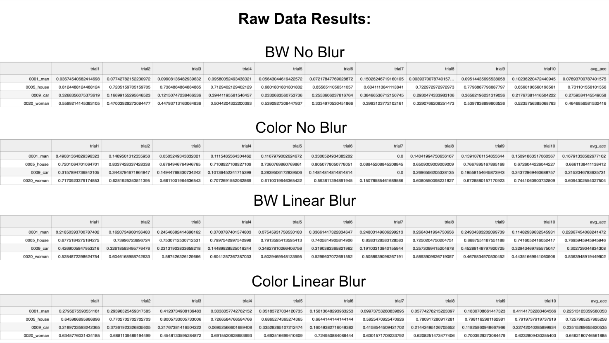
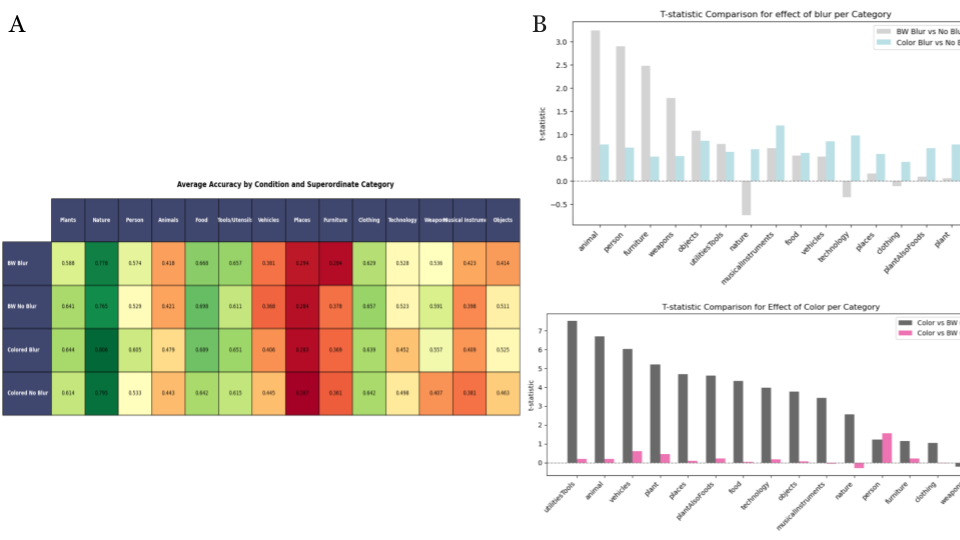

My Work:
There are six models from Jinsi et al. (2023): three trained on grayscale images
(without blur, with linear blur, and with nonlinear blur) and three trained on color
images (without blur, with linear blur, and with nonlinear blur). I did not re-train
them, I only took the pre-trained models and evaluated their performance over ten
trials each. It is important to note that I also only took the maximum performance
at a given time from each one of these trials from the validation training set.
That set me up to get one value per basic-level category for each model condition.
From there, I computed the mean accuracy from each model condition for each category. The
models trained on the color conditions did perform the best, like the paper.
Additionally, note that there is a discrepancy between the paper and my results. This
is where the limitation of using the maximum performance time point comes in. I only
got one value where we can see in the paper, the accuracy is measured across all time
points per epoch (thus getting a curve). It is not a surprise that my accuracy values were
higher.
From there, I separated the 565 basic-level categories into
14 superordinate categories but then modified it to 15. (Figure A shows the initial
14 catgories, but I added on another one when performing t-statistic calculation later).
Some superordinate categories had more labels than others due to the nature of the dataset.
I computed the same average accuracy across these categories to get the general idea on which
categories the models were doing the best on.
I was then curious about the effects between the blurred condition vs. the colored condition;
that is, is there any interaction between the conditions? So, I computed the t-statistics for
each superordinate category. There is a significant t-statistic for the majority of the categories
in the colored condition, but only when there was a blur applied; this aligned with the paper as
expected.
A few things to note include that my organization of superordinate categories was completely
subjective. One category I was having issues with was the plants/foods categories - some plants
can be classified as food, so which category would I put that in? I ended up breaking it down even
further and adding a "plants as foods" category, which were the plants that could act as food items as well.
I am currently in the process of continuing to break
down the superordinate categories even more - some things I have done are breaking "objects" (miscalleanous)
into natural and artifical objects, dividing animals and tools by size, and sorting tools/utilities by
complexity. Future work can continue this breakdown,
as well as having a second coder of the labels into categories.

For each condition, noted the model trial's performance for a basic-level category.
Image includes man, house, car, woman categories. Non-linear blur model was excluded.

(A): Average accuracy by condition and superordinate category.
A darker color towards red indicates worse
performance and a brighter green indicates better performance.
(B): T-statistic comparison for effect of blur (top) and effect of color
(bottom). All p-values were less than 0.05 for the COLOR condition.